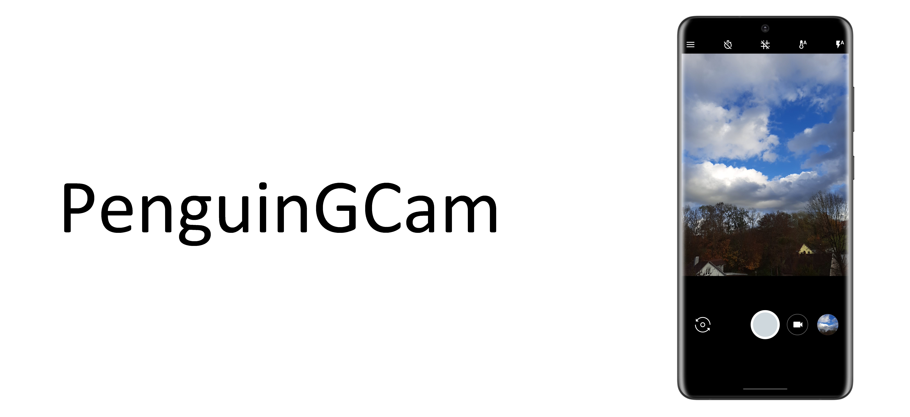

PenguinGCam is a modded GCam by Pinguin2001
Changelog for v5.1:
- Added some GCam v7 UI elements
- Fixed "App not installed"
- More under-the-hood improvments
Download:
Download (33 mb)Sample Pictures Gallery:
Sample PicturesScreenshots:
ScreenshotsFeatures:
- Shooting Photo and making Video
- HDR(on supported devices)
- 360 Camera
- Lens Blur/Portrait Mode
- Panorama
- Timer
- Custom brightness
- Custom white balance
- Very good image processing
- Video stablilization
- Dirty lens warning
- Volume key actions(Shutter, Zoom)
- Double-tap to Zoom
- Custom resolution (Photo and Video)
- AR Stuff(via Playground Add-on)
Supported devices:
- Most Samsung Devices running Android 8+
Copyright © 2020-2021 Pinguin2001